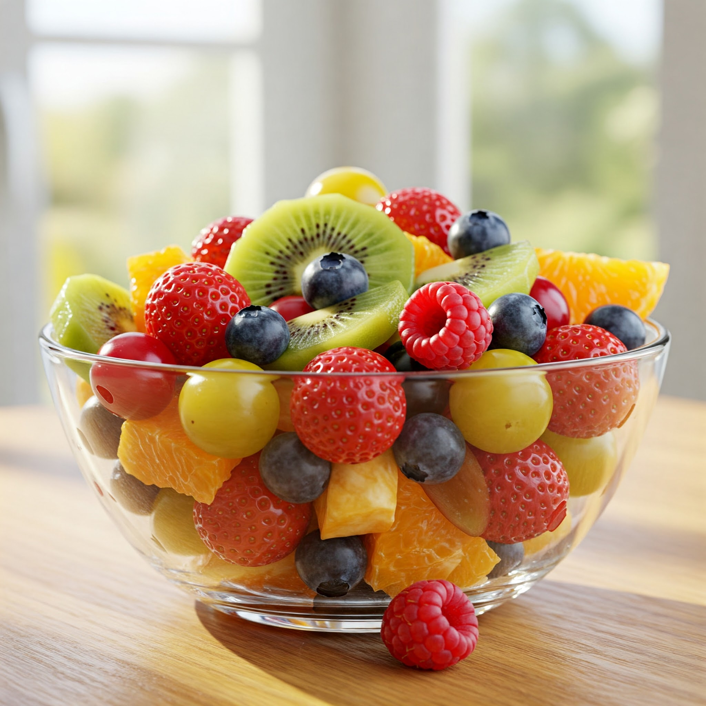

FRUIT SALAD
Description
A refreshing and vibrant mix of seasonal fruits, perfect as a healthy snack or dessert.
Ingredients
- 1 Apple, chopped
- 1 Banana, sliced
- 1 Orange, segmented
- 1 cup Grapes, halved
- 1 Kiwi, peeled and sliced
- Optional: Honey or a drizzle of lemon juice
Instructions
- Wash all the fruits thoroughly.
- Chop the apple, slice the banana and kiwi, and segment the orange. Halve the grapes.
- Gently combine all the chopped and sliced fruits in a bowl.
- Optional: Drizzle with a little honey or fresh lemon juice for added flavor.
- Mix gently and serve fresh. For a chilled salad, refrigerate for a while before serving.